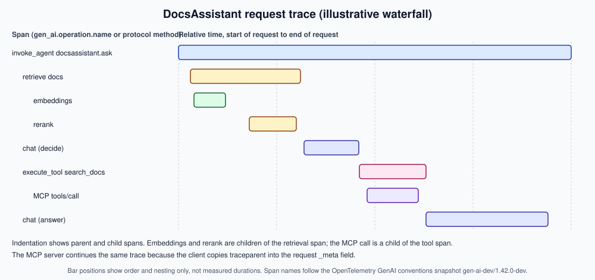

Observability with OpenTelemetry
|
This content was generated with the assistance of AI and should be verified against the official documentation before being relied on in production. |
Written on 2026-10-01 against OpenTelemetry Python API and SDK 1.45.0, OpenLLMetry (traceloop-sdk) 0.62.4, Spring AI 2.0.1 on
Spring Boot 4.1.x with Java 21, and the OpenTelemetry GenAI semantic conventions at Development stability in the registry
snapshot gen-ai-dev/1.42.0-dev (built on core semantic conventions 1.44.0); the full list is the
version baseline on the landing page. Every snippet here was written from the
official documentation linked after it and was not run: no collector, backend or MCP server was started for this page, and the
Spring configuration was not booted. The attribute and metric names below were taken from the conventions as they stood in that
snapshot; the specification pages were not re-fetched while writing, so where a name or a requirement level is uncertain the text
says so, and the registry linked in the references is the authority.
Observability answers a question that evaluation cannot: why did this answer go wrong, and what is the fleet doing right now? The previous page on Evaluation in CI gates a change before release. This page records what the released DocsAssistant actually did, in a vendor-neutral format so that the backends compared on Observability Platforms are interchangeable. The motivation for tracing every model call, and for keeping prompts, retrieved context and cost together on one record, is the one argued in AI Engineering by Huyen and in LLMOps by Aryan; the names, configuration and code below come from current OpenTelemetry, OpenLLMetry and Spring documentation, since the books pre-date the GenAI conventions.
Why a standard, and what its status means
Without a convention every library names its attributes differently: one SDK records llm.tokens.prompt, another
ai.usage.promptTokens. A dashboard then needs one mapping per library. The OpenTelemetry GenAI semantic conventions define one
vocabulary for model calls, agents, tools, embeddings and retrieval, plus a small set of metrics, so any instrumented
application can be read by any backend that understands OpenTelemetry. Related, narrower conventions exist for MCP.
All of this is at Development stability. In OpenTelemetry terms, Development means attribute and metric names, requirement levels and even span structure may still change between releases, and instrumentations are expected to keep emitting the previous shape unless the user opts in. The page therefore pins everything to a snapshot instead of speaking about "the conventions" as if they were fixed:
| Item | State on 2026-10-01 |
|---|---|
Registry snapshot |
|
Home of the conventions |
The repository |
Opt-in switch |
|
Names most likely to change |
Anything about message content (event versus attribute form, the structured message attributes), agent and workflow operation names, the retrieval operation, and the MCP attributes. The token and duration metrics are the most settled, but they carry the same Development label. |
A practical rule follows: keep the mapping from gen_ai.* names to your dashboards in one place (recording rules, see
Metrics, Dashboards and Alerting), and re-read the registry at each
upgrade of an instrumentation library, not only of the application.
Spans for model calls, agents, tools and MCP
A GenAI span is identified by the attribute gen_ai.operation.name. The span name is, by the convention, that operation name
followed by the model (or agent or tool) name, so a chat call to a model reads chat <model>. The operations that matter for the
DocsAssistant are:
gen_ai.operation.name |
Meaning | Where it appears in DocsAssistant |
|---|---|---|
|
A call to a chat or text-generation model. |
The planning call and the answer call. |
|
A call to an embedding model. |
Embedding the user question for retrieval, and at ingestion time. |
|
A call that fetches documents from a store. Present in the registry snapshot as a GenAI operation; confirm it in your version. |
The vector search over the documentation index. |
|
One invocation of an agent, which may contain several model and tool calls. |
The root span of a request that goes through the agent loop. |
|
One tool call executed by the application on behalf of the model. |
The |
Other operations exist in the registry (creating an agent, text completion, content generation APIs, workflows); they are not
used here. A reranker has no dedicated operation in the conventions as far as this page could determine, so the DocsAssistant
names its rerank span with its own prefix and marks it as application-specific rather than inventing a gen_ai value.
The attributes that carry most of the diagnostic value:
| Attribute | Use |
|---|---|
|
The operation, from the table above. |
|
The provider or serving stack that produced the response ( |
|
The model asked for and the model that actually answered. With an alias and a gateway these can differ, and that difference is evidence for the drift discussion on Drift and Regression Monitoring. |
|
Token counts reported by the provider. The input of the cost formulas on Cost Management. |
|
Why generation stopped, for example a length cut-off. |
|
The sampling parameters in force, useful when an answer changed and the configuration changed with it. |
|
Which agent ran and which conversation it belongs to (use a pseudonymous id). |
|
Which tool was called; the arguments and results are content and follow the opt-in rules below. |
|
Set on failed spans so error rates can be computed per operation. |
MCP has its own, separate conventions: a span per MCP request whose name is built from the method (for example tools/call) and
a target, with attributes such as mcp.method.name, mcp.session.id and mcp.protocol.version, and client and server
duration metrics. These were read in outline only; check their exact names in the registry before building a dashboard on them.
The MCP protocol itself is described on MCP Architecture.
A request trace in the DocsAssistant
The diagram shows one question, as an OpenTelemetry backend would draw it. The root is an invoke_agent span; below it a
retrieval span contains the embedding call and the rerank step; the first chat span decides to use a tool; an execute_tool
span contains the MCP tools/call request; the second chat span writes the answer.

The bar positions are illustrative and no timings are quoted. What the shape teaches is how to read a slow request: the root duration is the sum of the sequential children plus gaps; a long gap between two children is application time (serialisation, queueing) that no model span explains; and the longest bar is rarely the one people expect, so look before optimising. The latency vocabulary for the serving layer, such as time to first token, is on Serving at Scale.
Per-stage traces for the retrieval half are discussed in Observability and Tracing for RAG, and the agent-loop view (steps, handoffs, tool errors) in Observability for Agents. This page supplies the common format underneath both.
Metrics: token usage and operation duration
Spans answer questions about one request. Two client-side metrics, defined by the same conventions, answer questions about all of them:
-
gen_ai.client.token.usage: a histogram of token counts per operation, with the attributegen_ai.token.typeseparatinginputfromoutput. Its unit is tokens, not currency; prices are kept out of telemetry and joined later from a price table. -
gen_ai.client.operation.duration: a histogram of the duration of a GenAI client operation, in seconds, labelled with the operation name, the provider and the model, and witherror.typeon failures.
Server-side counterparts for time to first token and time per output token are also defined; a self-hosted serving engine may
publish its own Prometheus metrics instead, which the serving page compares. Histogram naming changes when Prometheus ingests
OTLP metrics (dots become underscores and a unit suffix may be added), which is why Spring AI shows gen_ai_client_token_usage
on its endpoint. Alerting on these series is the subject of
Metrics, Dashboards and Alerting; Micrometer and Prometheus basics for a
Spring service are on Metrics and Observability.
Telemetry volume is easy to underestimate because one request fans out into many spans. With requests per second, spans per request (eight in the waterfall above, more per extra tool call) and a head-sampling probability , the span rate leaving the application is:
Metrics are not affected by trace sampling, because they are aggregated before export; that is the reason to build alerts on metrics and use sampled traces for investigation.
Content capture and privacy
Prompts, retrieved passages, tool arguments and answers are the most useful data in a trace and the most sensitive. The conventions treat them accordingly:
-
Off by default. Message content, system instructions, tool definitions and tool call arguments and results are opt-in, not part of the default span. The registry marks these attributes as opt-in requirement level.
-
Two shapes. The snapshot has moved content between span events and structured span attributes (
gen_ai.input.messages,gen_ai.output.messages,gen_ai.system_instructions) and an event namedgen_ai.client.inference.operation.details. That is exactly the kind of detail the Development label warns about, so confirm which your instrumentation emits. -
Per-library switches. The Python contrib instrumentation for OpenAI documents the environment variable
OTEL_INSTRUMENTATION_GENAI_CAPTURE_MESSAGE_CONTENT; OpenLLMetry documentsTRACELOOP_TRACE_CONTENT; Spring AI documentslog-promptandlog-completionproperties. Three libraries, three switches, one decision per environment. -
Redact at the collector too. An application switch is easy to flip by mistake. A collector in front of the backend is a second control point where content attributes can be dropped for the production pipeline while a staging pipeline keeps them.
receivers:
otlp:
protocols:
http:
endpoint: 0.0.0.0:4318
processors:
attributes/strip-content:
actions:
- key: gen_ai.input.messages
action: delete
- key: gen_ai.output.messages
action: delete
- key: gen_ai.system_instructions
action: delete
- key: gen_ai.tool.call.arguments
action: delete
- key: gen_ai.tool.call.result
action: delete
batch: {}
exporters:
otlphttp:
endpoint: ${env:TRACE_BACKEND_URL}
headers:
authorization: ${env:TRACE_BACKEND_AUTH}
service:
pipelines:
traces:
receivers: [otlp]
processors: [attributes/strip-content, batch]
exporters: [otlphttp]Source: OpenTelemetry Collector: Configuration and the
attributesprocessor documentation in the collector-contrib
repository. Whether content arrives as span attributes or as log-record events decides which processor must delete it; if your
instrumentation emits events through the logs signal, add the same deletion to a logs pipeline. The backend URL and credential
are read from environment variables so that no secret sits in the file.
Three further practices complete the picture. First, decide what the legal basis and retention of stored prompts are before turning capture on; the rules for stored text belong to Data Operations and to the security and responsible-AI sub-section, which is a separate topic from this page. Second, remember that DocsAssistant answers quote documentation, but the questions are user text and may contain pasted secrets or personal data, so redaction has to work on inputs as well. Third, a trace id attached to every feedback record and every judged sample is what ties Online Evaluation and Feedback back to the exact spans, without the content being stored in the tracing backend at all.
Instrumenting Python
Two routes exist, and they combine: the plain OpenTelemetry SDK, where you create spans yourself and follow the conventions, and an instrumentation library, which wraps the provider SDK and emits the spans for you.
OpenTelemetry SDK, manually
The setup below configures a tracer provider that exports over OTLP/HTTP. The endpoint and headers come from the standard
OTEL_EXPORTER_OTLP_* environment variables, so nothing environment specific lives in code.
from opentelemetry import trace
from opentelemetry.exporter.otlp.proto.http.trace_exporter import OTLPSpanExporter
from opentelemetry.sdk.resources import Resource
from opentelemetry.sdk.trace import TracerProvider
from opentelemetry.sdk.trace.export import BatchSpanProcessor
def setup_tracing() -> None:
resource = Resource.create({"service.name": "docsassistant", "service.version": "1.0.0"})
provider = TracerProvider(resource=resource)
# Endpoint and headers are read from OTEL_EXPORTER_OTLP_ENDPOINT and OTEL_EXPORTER_OTLP_HEADERS
provider.add_span_processor(BatchSpanProcessor(OTLPSpanExporter()))
trace.set_tracer_provider(provider)
tracer = trace.get_tracer("docsassistant")
def traced_chat(client, model: str, messages: list[dict]) -> str:
with tracer.start_as_current_span(f"chat {model}") as span:
span.set_attribute("gen_ai.operation.name", "chat")
span.set_attribute("gen_ai.provider.name", "openai") # whichever provider the gateway reports
span.set_attribute("gen_ai.request.model", model)
response = client.chat.completions.create(model=model, messages=messages)
span.set_attribute("gen_ai.response.model", response.model)
span.set_attribute("gen_ai.usage.input_tokens", response.usage.prompt_tokens)
span.set_attribute("gen_ai.usage.output_tokens", response.usage.completion_tokens)
return response.choices[0].message.contentSource: OpenTelemetry Python: Instrumentation and
OpenTelemetry Python: Exporters. The gen_ai.* attribute names are
those of the snapshot discussed above; the OpenAI response fields are the client library’s, and the helper is the
DocsAssistant’s own code. Note that no message content is recorded here, which is the default stance.
Run it with the environment pointing at a collector, and with the opt-in variable when an instrumentation library is also active:
export OTEL_SERVICE_NAME=docsassistant
export OTEL_EXPORTER_OTLP_ENDPOINT=http://otel-collector:4318
export OTEL_EXPORTER_OTLP_HEADERS="authorization=${TRACE_BACKEND_AUTH}"
export OTEL_SEMCONV_STABILITY_OPT_IN=gen_ai_latest_experimental
python -m docsassistantSource: OpenTelemetry: OTLP Exporter Configuration. The opt-in variable is the one named by the Python contrib GenAI instrumentation; the plain SDK ignores it.
OpenLLMetry
OpenLLMetry is an open-source set of OpenTelemetry-based instrumentations for LLM providers, vector stores and frameworks, with a
convenience SDK, traceloop-sdk. It exports standard OTLP, so it works with any backend and not only the vendor that maintains it.
Traceloop.init patches the supported libraries it finds; decorators add application-level structure on top.
from traceloop.sdk import Traceloop
from traceloop.sdk.decorators import task, workflow
# OTLP endpoint comes from TRACELOOP_BASE_URL (or the standard OTEL_EXPORTER_OTLP_* variables);
# credentials come from the environment, never from the source.
Traceloop.init(app_name="docsassistant", disable_batch=False)
@task(name="retrieve")
def retrieve(question: str) -> list[str]:
... # vector search; the vector-store client is instrumented automatically if supported
@workflow(name="ask")
def ask(question: str) -> str:
passages = retrieve(question)
... # model call; provider SDK is instrumented automatically
return "answer"Source: OpenLLMetry: Introduction and the
OpenLLMetry repository. The Traceloop.init and decorator names were read from the
documentation; the disable_batch argument is shown with its default value and is not needed. Set TRACELOOP_TRACE_CONTENT=false
to stop it recording prompts and completions.
Two cautions for OpenLLMetry. The attribute names it writes are a mixture of gen_ai.* and its own traceloop.* attributes,
and which gen_ai.* version it follows depends on the release; with traceloop-sdk 0.62.4 this page did not compare its output
against the gen-ai-dev/1.42.0-dev snapshot, so inspect a real trace before writing queries against it. And it patches libraries
at import time, so initialise it before importing the provider SDK, as its documentation advises, or the calls will not be traced.
Instrumenting Spring AI
Spring AI is built on Micrometer observations: a ChatClient call, an advisor, a ChatModel call, an EmbeddingModel call, a
vector store query and a tool execution each produce an observation, which Micrometer exposes as a metric and, with a tracing
bridge on the classpath, as a span. The conventions followed are Spring AI’s own implementation of the GenAI vocabulary, and the
metric surfaces as gen_ai_client_token_usage with token-type labels; the full list of observations, names and tags is on
Spring AI Observability. The OpenTelemetry route to a backend is therefore a Spring Boot
configuration exercise, not a Spring AI one.
spring.application.name=docsassistant
# Traces: sample a fraction and export over OTLP/HTTP to the collector
management.tracing.sampling.probability=0.1
management.opentelemetry.tracing.export.otlp.endpoint=${OTEL_COLLECTOR_URL:http://localhost:4318}/v1/traces
# Metrics: push over OTLP as well, in addition to any Prometheus scrape endpoint
management.otlp.metrics.export.url=${OTEL_COLLECTOR_URL:http://localhost:4318}/v1/metrics
management.otlp.metrics.export.step=30s
# Prompt and completion content: off by default, spelled out so the decision is reviewed
spring.ai.chat.observations.log-prompt=false
spring.ai.chat.observations.log-completion=false
spring.ai.chat.client.observations.log-prompt=false
spring.ai.chat.client.observations.log-completion=falseSource: Spring AI: Observability,
Spring Boot: Tracing and
Spring Boot: Metrics. The Boot property names changed between
major versions (older releases used management.otlp.tracing.endpoint); the names above match the sibling Spring AI page for
Boot 4.1, but they were not booted here, so confirm them against the Boot 4.1 reference. Spring Boot additionally needs the
Micrometer tracing bridge for OpenTelemetry and an OTLP exporter on the classpath for spans to be produced and exported.
A few Spring-specific points deserve emphasis:
-
Micrometer, not the OTel SDK API. Application code does not create spans through
io.opentelemetryhere; it relies on the observations Spring AI creates, and adds its own with theObservationRegistrywhen needed. That keeps one instrumentation model across Spring MVC, the HTTP client, the database and the model call. -
Context propagates over HTTP. Incoming
traceparentheaders continue an existing trace, and outgoing calls through Spring’s instrumented clients inject it, so a Python edge service and a Spring AI back end can share a trace. -
Attribute names are Spring AI’s. They follow the GenAI vocabulary closely but are produced by Spring AI releases, not by the OpenTelemetry snapshot. When both a Python and a Java service report to one backend, check that
gen_ai.provider.nameversus older names and the metric names agree, or map them at the collector. -
Tool and advisor spans appear nested under the chat client observation, which gives the same
execute_toolstructure shown in the waterfall without any code.
Trace context through MCP _meta
A trace is only useful if it crosses process boundaries. Over HTTP, the W3C Trace Context headers traceparent and tracestate
carry the context. MCP is not always carried over HTTP request headers that instrumentation sees (a stdio transport has no
headers at all), so the GenAI and MCP conventions use the protocol’s own extension point instead: the _meta field that MCP
defines on request parameters. The client copies the context into params._meta and the server extracts it before starting its
own span.
tools/call request carrying the trace context in _meta{
"jsonrpc": "2.0",
"id": 7,
"method": "tools/call",
"params": {
"name": "search_docs",
"arguments": { "query": "configure retries" },
"_meta": {
"traceparent": "00-4bf92f3577b34da6a3ce929d0e0e4736-00f067aa0ba902b7-01",
"tracestate": "vendor=docsassistant"
}
}
}Source: Model Context Protocol specification for the _meta field and
W3C Trace Context for the traceparent and tracestate formats; the id values are the
examples from the W3C document. That MCP instrumentation should use _meta for propagation is stated in the MCP semantic
conventions as this page read them; the MCP specification itself only reserves _meta for metadata, so the field names are a
convention between instrumented clients and servers, not a protocol requirement.
In Python this is the standard propagator API: inject into a dictionary on the client, extract from it on the server.
_meta with the OpenTelemetry propagation APIfrom opentelemetry import trace
from opentelemetry.propagate import extract, inject
tracer = trace.get_tracer("docsassistant.mcp")
def call_tool(session, name: str, arguments: dict):
with tracer.start_as_current_span("tools/call " + name, kind=trace.SpanKind.CLIENT) as span:
span.set_attribute("mcp.method.name", "tools/call")
carrier: dict[str, str] = {}
inject(carrier) # writes traceparent (and tracestate if present)
return session.send_request("tools/call", {"name": name, "arguments": arguments, "_meta": carrier})
def handle_tool_call(params: dict):
context = extract(params.get("_meta", {}))
with tracer.start_as_current_span("tools/call " + params["name"], context=context, kind=trace.SpanKind.SERVER):
... # run the toolSource: OpenTelemetry Python: Propagation. The session.send_request
helper stands for whatever your MCP client library exposes for sending a request with extra parameters; the real SDKs differ and
the call was not checked against any of them, so treat this as the shape of the idea.
Three consequences are worth stating. A server that does not extract _meta still works, but its spans start a new trace and the
waterfall breaks at the MCP boundary, which is the first thing to check when a tool span has no children. A stdio server needs
this mechanism even more than an HTTP one. And _meta crosses a trust boundary: a remote MCP server receives the trace id and any
tracestate the client puts there, so do not place user identifiers or secrets in tracestate, and consider whether you want
third-party servers to join your traces at all. Authorization and other protocol security topics are covered on the MCP pages
rather than here.
Putting it together for the DocsAssistant
A workable production layout, in the order data flows:
-
The Spring AI back end and the Python tooling export OTLP to a collector in the same network. Content logging is off in both.
-
The collector deletes content attributes in the production pipeline, batches, and exports to the backend chosen on Observability Platforms. A separate staging pipeline keeps content for debugging.
-
Metrics (
gen_ai.client.token.usage,gen_ai.client.operation.duration) feed Prometheus and Grafana, where the golden-signal alerts live. -
A sample of traces is judged online and user feedback is stored with the trace id, as on the online evaluation page.
-
Each upgrade of an instrumentation library re-checks one real trace against the registry snapshot, and the version baseline on the landing page is updated when the snapshot moves.
Common pitfalls
-
Treating Development names as stable. Pin the snapshot, centralise the name mapping, and review it on every instrumentation upgrade.
-
Capturing content by default. Prompts hold personal data and pasted secrets. Leave capture off, and add a collector rule as a second line.
-
Double instrumentation. Running OpenLLMetry, a contrib OpenAI instrumentation and manual spans together produces duplicate model spans and doubled token counts. Choose one source per call.
-
Sampling away the interesting traces. Head sampling at a low rate drops most errors. Consider tail sampling in the collector for errors and slow requests, and keep metrics unsampled.
-
Broken context at async and MCP boundaries. A missing parent usually means context was not propagated across a thread pool, a queue or
_meta. -
High-cardinality metric labels. Model and operation are fine; user id, conversation id and prompt text are not.
-
Hard-coded credentials in exporter settings. Read endpoint and headers from the environment or a secret store.
-
Confusing tracing with evaluation. A trace says what happened; it does not say whether the answer was good. Judging is on the evaluation pages.